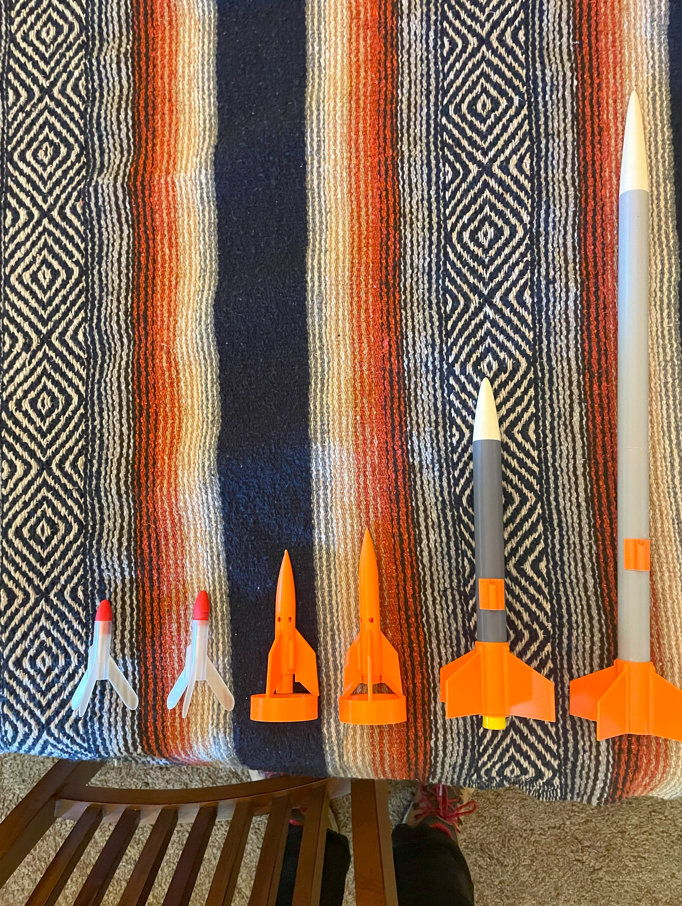
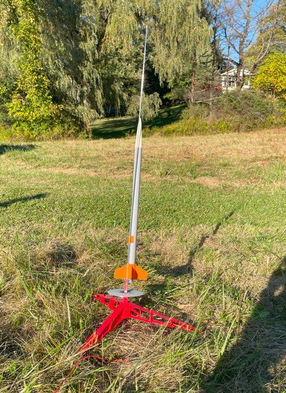
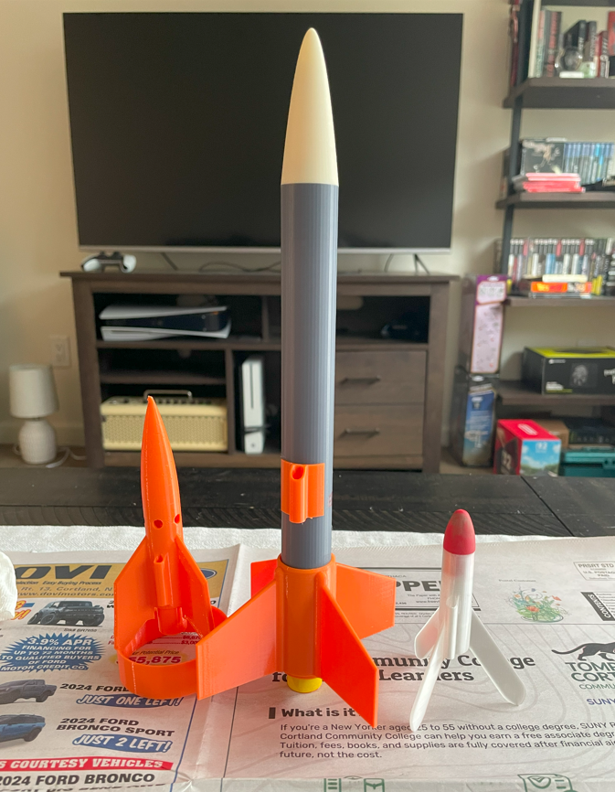

Mission: STRATUM 1
Mission Video
Mission Overview
West-Tek Solutions is targeting Sunday, September 20 for launch of our STRATUM 1 rockets from the West Family Launch Site. Liftoff is targeted for 5:00 PM EST.
This will be the first flight for our 3D-Printed Stratum Rockets, powered by Estes B6-4 single-use motors. Following liftoff, the rocket will reach an estimated altitude of 800 feet, deploy its parachute recovery system, and return to the launch site for inspection and potential relaunch preparation.
Mission: Stratum represents West-Tek Solutions' advancement into more complex 3D-printed rocketry. Unlike the GNAT, which was a simple two-piece tumble-recovery design requiring minimal assembly, the Stratum is a more complex eight-piece rocket. Its name reflects the layered construction that defines both its design and its assembly process.
This mission is about applying and testing our 3D printing capabilities in a more conventional model rocket. Every step—from fitting the individual 3D-printed components to executing a controlled launch and recovery—is an opportunity to refine our fabrication techniques and gain hands-on familiarity with conventional model rocketry. This mission combines material experimentation with practical experience, ensuring that each launch not only tests the limits of our prints but also strengthens the foundational knowledge we'll build upon for future rockets.
Mission Objectives
Mission Summary
The Stratum I launch drew a great turnout of family, making the day both fun and productive. Alongside the Stratum rockets, we also flew three GNATs, all of which performed well though none were recovered, and two in-development rockets that flew successfully and were retrieved. One of those prototypes was gifted to our field recovery technician, Avi, as thanks for his efforts in the field.
The Stratum rockets, while not achieving full success, provided critical lessons. The short version suffered a structural failure about one second after ignition when motor heat softened the PLA body tube, causing the fin housing to detach. The second rocket reached apogee and deployed its chute, but again the PLA tube melted near the fin connection, resulting in fin separation during descent.
These results highlighted material and design limitations, leading us to switch to PETG for future body tubes and to strengthen the fin can in the upcoming Stratum II design. Overall, the mission provided valuable insights into material properties under flight conditions and informed our design improvements for future launches.



